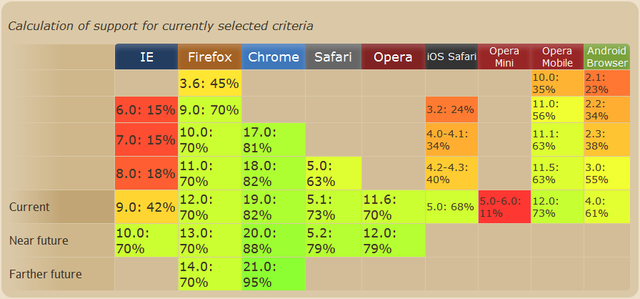

LABORATORIO 1

Luis Gabriel Delfín Paulín
A01701482
A01701482@tec.mx
08/08/2022
1. ¿Cuál es la diferencia entre Internet y la World Wide Web?
Internet es una red de computadoras de todas partes del mundo conectadas entre sí, cuando WWW es
la colección de dominios dentro de esta misma red.
2. ¿Cuáles son las partes de un URL?
Protocolo de red
Servicio
Dominio
Ruta y nombre del archivo
3. ¿Cuál es el propósito de los métodos HTTP: GET, HEAD, POST, PUT, PATCH, DELETE?
GET: Recupera datos de un recurso específico
HEAD: Recupera datos sin el "body" de un recurso específico
POST: Envia datos a un recurso específico
PUT: Reemplaza los datos de un recurso específico
PATCH: Aplica modificaciones a un recurso específico
DELETE: Borra un recurso específico
4. ¿Qué método HTTP se debe utilizar al enviar un formulario HTML, por ejemplo cuando ingresas tu usuario y contraseña en algún sitio? ¿Por qué?
POST porque este método es el que envía los datos.
5. ¿Qué método HTTP se utiliza cuando a través de un navegador web se accede a una página a través de un URL?
GET porque estamos recuperando datos de un sitio.
6. Un servidor web devuelve una respuesta HTTP con código 200. ¿Qué significa esto? ¿Ocurrió algún error?
Que el proceso fue exitoso y no ocurrió algún error.
7. ¿Es responsabilidad del desarrollador corregir un sitio web si un usuario reporta que intentó acceder al sitio y se encontró con un error 404? ¿Por qué?
No, es responsabilidad del usuario, que ingresó mal el URL. Si el link está en la página es responsabilidad del desarrollador.
8. ¿Es responsabilidad del desarrollador corregir un sitio web si un usuario reporta que intentó acceder al sitio y se encontró con un error 500? ¿Por qué?
No, este es error de servidor.
9. ¿Qué significa que un atributo HTML5 esté depreciado o desaprobado (deprecated)? Menciona algunos elementos de HTML 4 que en HTML5 estén desaprobados.
Son los atributos que ya no son recomendados debido a que hay mejores "versiones". Por ejemplo: center, big, strike, entre otros.
10. ¿Cuáles son las diferencias principales entre HTML 4 y HTML5?
El DOCTYPE se simplifica y se introducen nuevos elementos como section, article, aside, etc. Como ya dicho anteriormente hay elementos que se desaprueban.
11. ¿Qué componentes de estructura y estilo tiene una tabla?
La tabla (table) incluye filas (tr) y columnas (col), al igual que puede incluir una caption (caption).
12. ¿Cuáles son los principales controles de una forma HTML5?
form
fieldset
legend
textarea
label
button
input
13. ¿Qué tanto soporte HTML5 tiene el navegador que utilizas?

14. Sobre el ciclo de vida y desarrollo de los sistemas de información:
¿Cuál es el ciclo de vida de los sistemas de información?
El ciclo de vida de un sistema de información es indefinido. Se reemplaza uno cuando ya deja de ser necesario o cuando hay uno mejor.
Nacimiento
Desarrollo
Operación
Mantenimiento
Muerte
¿Cuál es el ciclo de desarrollo de sistemas de información?
Esta parte del ciclo es donde se analizan los requerimientos y se elabora un diseño de base. Aquí se diseña, se contruye y se adecuan los programas.
Referencias
Pregunta 1
Pregunta 2
Pregunta 3
Pregunta 9
Pregunta 11
Pregunta 14